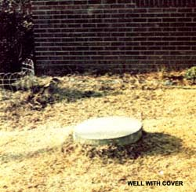
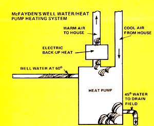
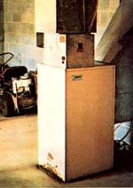

The idea of using cool water to heat a house may seem somewhat strange to most of us. But that's exactly what Willard McFayden of Ellerbe, North Carolina has been doing-and doing quite successfully-for the past eight years.
Yes, and plenty of it! There's usable and extractable heat, in fact, in any water . . . right down to the point (32° F) that it becomes ice.
(For that matter, you can use both ice and water to maintain a comfortable living temperature in a struc ture. The Oak Ridge National Laboratory in Tennessee, for instance, has experimented for the past few years with an "Annual Cycle Energy System" which warms a building during the winter by freezing water into ice ... and then cools the structure in the summer by melting the same ice back into water. See MOTHER NO. 35 for a complete report on that project.)
In McFayden's case, the 60° well water that he taps is far more than adequate for his purposes for two reasons: [1] Willard has at least a 10° temperature margin working in his favor, since his system was designed to operate quite effectively day in and day out with an input of 50° water, and [2] McFayden's well is capable of delivering a constant flow of 50 gallons of water a minute ... while his heating setup needs only eight gallons a minute and needs those eight gallons only sporadically as his home's regulating thermostat turns the system on and off.
Just like Bob Sheppard (see the article below), Willard McFayden accomplishes the seemingly impossible trick of warming his house with cool water through the use of a water-to-air heat pump. (See the accompanying sidebar for an explanation of how this worthy piece of machinery operates.)
The heat pump that Willard uses looks a great deal like an ordinary electric furnace and requires about as much attention. The big difference between the two units only becomes apparent at the end of the month when the power bill comes in.
McFayden has religiously saved all his utility stubs and can show you that the average monthly bill (summer and winter) during 1976 for his all-electric 1,700-square-foot house-charged at the rate of 3.5 cents per kilowatt hour-was just $47.22. Willard is quick to point out that this is about 20% less than the monthly power bills paid by his brother, Robert ... who lives right across the road in a very similar all-electric house heated by an air-to-air heat pump. And Robert's electric bills, in turn, are far lower than those of other folks in the area who live in still other all-electric homes that use no heat pumps at all.
Conclusion: Air-to-air heat pumps are far more efficient than any other kind of electric heat ... except for water-to-air heat pumps, which are the most efficient form of electric heat currently available on the market.
Although Willard McFayden's water-to-air heat pump works perfectly now, this inventive North Carolinian was definitely ahead of his time eight years ago when he first installed the unit. And, as a pioneer, McFayden paid a price for blazing new ground.
"The company that manufactured my pump didn't really know what it was doing back then," Willard now says, "and there were no service people around at the time familiar with this kind of equipment. And that did cause some headaches. There wasn't enough working fluid in my unit when I originally received it and the electrician who handled the installation wired the whole thing up wrong. One winter's night, the unit even started cooling the house instead of heating it!"
Those early bugs were soon worked out, however, and the McFayden family has now enjoyed years of trouble-free service from their heat pump. Willard, understandably, remains very enthusiastic about the installation.
HOW TO SOLAR HEAT YOUR HOME WITH A SWIMMING POOL
|
|
 |
 |
|
 |
|
|